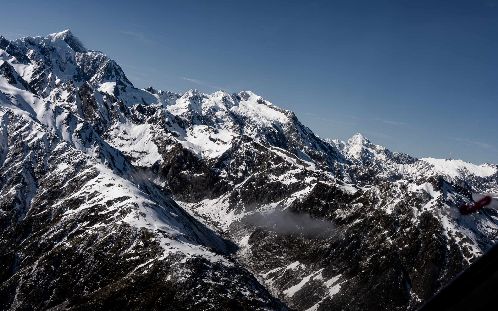
I landed in Auckland early on the Monday morning after a long journey out, and with check-in not until 3pm, the eyes were heavy well before then. It's worth factoring the journey itself into your planning rather than the destination days alone, more on the flights in Before You Fly. Once on the ground, late November turned out to be a strong window for visiting New Zealand. You catch the very tail end of spring, lupins in full bloom, the mountains still holding onto their snow, and the glaciers down in Glacier Country still carrying decent depth before the summer melt properly sets in. The weather is a little unpredictable at this time of year, but it's warm and pleasant as the season edges towards summer, and prices sit noticeably below both the summer peak and the winter ski season, which made it an easy choice for a winter getaway.
The trip itself began with three days in Auckland before an internal flight across to Christchurch on the South Island. From there the itinerary looped through all four corners of the South Island, which I'll cover stop by stop below.
Travel Notes
Before You Fly
British citizens don't need a visitor visa for stays in New Zealand of up to six months, but you will need to arrange an NZeTA before you travel. Mine cost NZ$117, which works out at around £52 once converted, not as painful as the number first suggests, and it covers you for stays of up to six months and remains valid for two years, so worth doing even if you're only planning one trip in that window. As I was routing through the US and my old ESTA had expired, I also needed a fresh one of those, which came to around £16 on top.
Flights were booked through British Airways at £1,200 return, departing midday on the Saturday into LAX before connecting onto Air New Zealand for the final leg into Auckland, landing at 6am on the Monday. The layover in LA was three hours, which turned out to be the sweet spot for stretching your legs and getting through the notoriously slow passport control at LAX. From what I gather it's generally one or the other at that airport, either a long wait at passport control or a lengthy wait for baggage. I got baggage on the way out and passport control on the way back, so if you're connecting through LAX I'd recommend building in a minimum of three hours regardless, which also gives you some contingency if the first leg runs late.
For connectivity I used Airalo again, this time opting for the 30GB package over 30 days at £39. That was comfortably enough to cover the trip, including using it for navigation throughout the drive, and I still had roughly 35% of the allowance left by the end.
Travel Notes
On The Ground Essentials
I booked car hire through Discover Cars, which was competitive on price and gives you a wide spread of rental companies to choose from, along with reviews and category ratings covering things like cleanliness and vehicle condition. I ended up going with EZU Car Rental. The car itself had clearly done a few miles, which was a little worrying at first given my South Island route worked out at somewhere between 2,800 and 3,000 kilometres. I picked the car up in Christchurch and kept it for 15 days to cover the full South Island itinerary, with the total cost coming to £400, which felt reasonable for the distance covered. My one piece of advice would be to size up slightly. I had the Japanese equivalent of a Toyota Yaris, which did the job but worked up a sweat of its own on some of the steeper mountain pass roads.
For getting around Auckland itself, I used Uber to and from the airport, roughly NZ$50 on the way in and closer to NZ$80 on the way back around 9am, which came to NZ$130 in total across the two trips. Could be rush hour pricing, or simply an airport drop off premium, hard to say for certain, but worth budgeting for the return leg costing more. This was nearly a year ago now, so treat it as a rough guide rather than a fixed cost. Beyond that, Auckland itself was very walkable from where I was staying, so no other transport was needed for the few days I spent there.
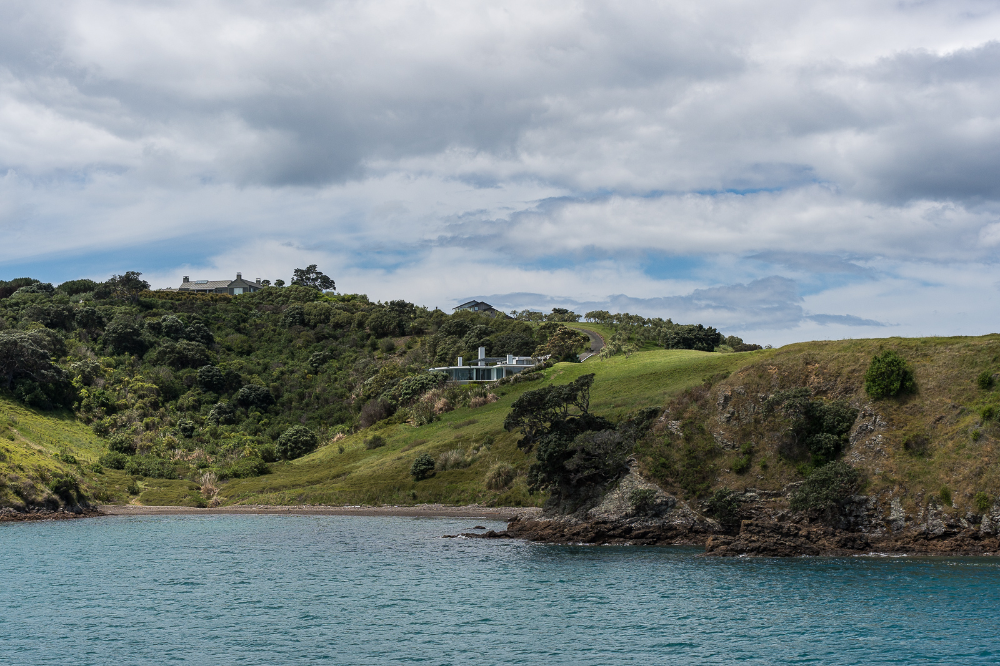
Itinerary
Auckland · 3 days
I stayed at VR Queen Street Hotel Suites in Auckland centre for £143, room only. The staff were friendly and the rooms spacious and clean, which was exactly what I needed after the journey. Check-in wasn't until 3pm, so I got an Uber straight from the airport, stored my luggage and headed out to wander and kill some time. I'll say though, Air New Zealand was probably the best flight experience I've had. The attendants were consistently friendly, generous with drinks and snacks between main meals, and the entertainment selection was strong.
Auckland itself had the essence of a big American style city without the busyness to match. I had a look around, grabbed some food and headed back to the hotel to see if I could talk my way into an early check-in, as by that point I was properly struggling. Managed to get into the room just after 2pm, had a shower and called it a day in the hope of a better start the next morning. With the day catching up on me, an early night felt like the right call.
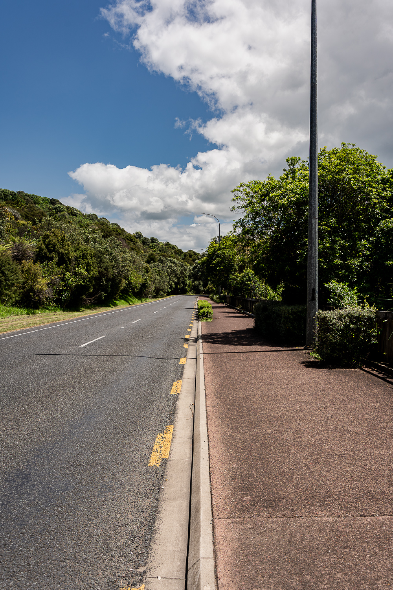
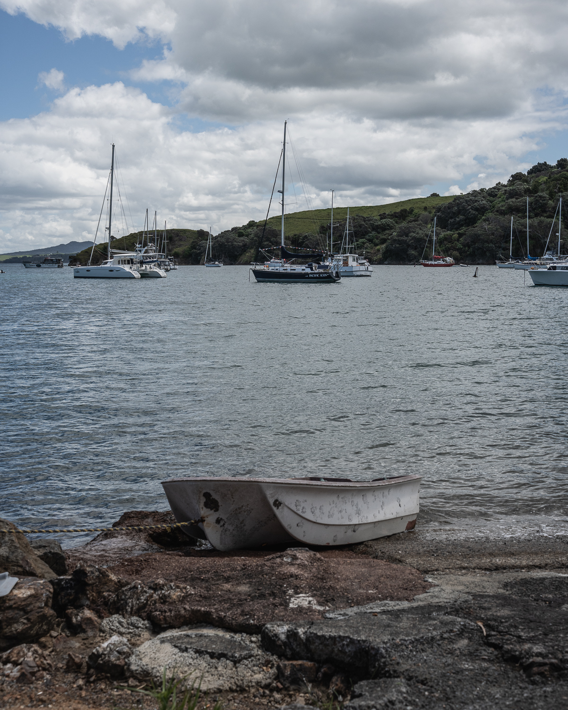
The following day I took the ferry over to Waiheke Island, tickets at NZ$65 return. I picked the boat up after breakfast from the port in the financial district, and the crossing took somewhere between 30 and 60 minutes. The views on the way over were excellent, green meadows and sheep dotted across the landscape. I wandered the island, visited one of the beaches and just took it all in, the slower pace, the friendly locals, and how impeccably clean everything was. Back in Auckland that afternoon I picked up a ticket to the Sky Tower at NZ$48, had a beer at the top and took in the views, still struggling to believe how blue the sea was. Jet lag was still clinging on by this point, and with an early start and a flight the next day, I headed back to the hotel rather than pushing the evening further.
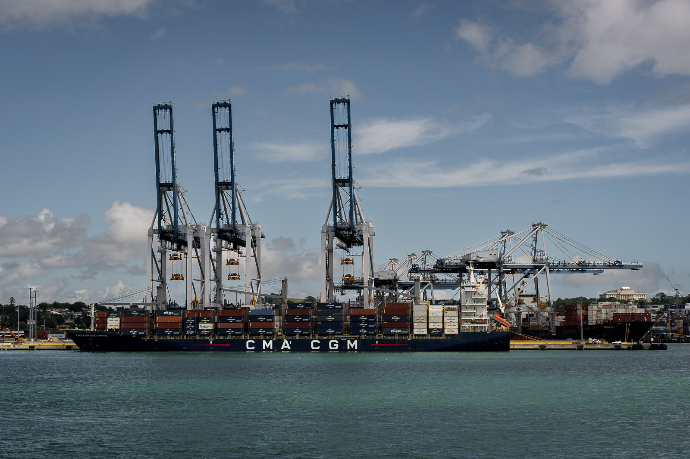
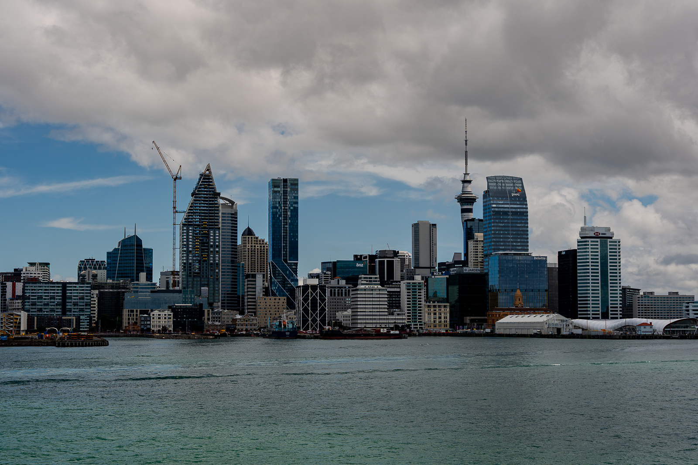
Breakfast at the hotel the next morning, then an Uber to the airport for the flight to Christchurch. I flew with Jetstar, which I'd describe as New Zealand's equivalent to easyJet. They're strict on baggage, weighing and sizing bags at the gate, so it's worth keeping an eye on allowances if you book with them, as they will charge extra if you go over. The flight came to £110 return, which included a 23kg checked bag, seat selection, 7kg hand luggage and an NZ$10 onboard voucher you could top up, which wasn't bad value overall.
Auckland Honest Take
Auckland itself is really just another city, not dissimilar to London or plenty of places in the US, so there isn't a huge amount to get excited about in my opinion. I'd treat it more as a pit stop than a destination in its own right, and it does have a good spread of day trips and local areas on offer if you want to make use of the time. Whether it's worth building into your itinerary probably comes down to how far you've already travelled to reach New Zealand. Personally, I probably wouldn't include it again on a return trip unless the itinerary specifically called for time on the North Island. Auckland itself was fairly expensive, though I quickly discovered that was true almost everywhere in New Zealand rather than something specific to the city.
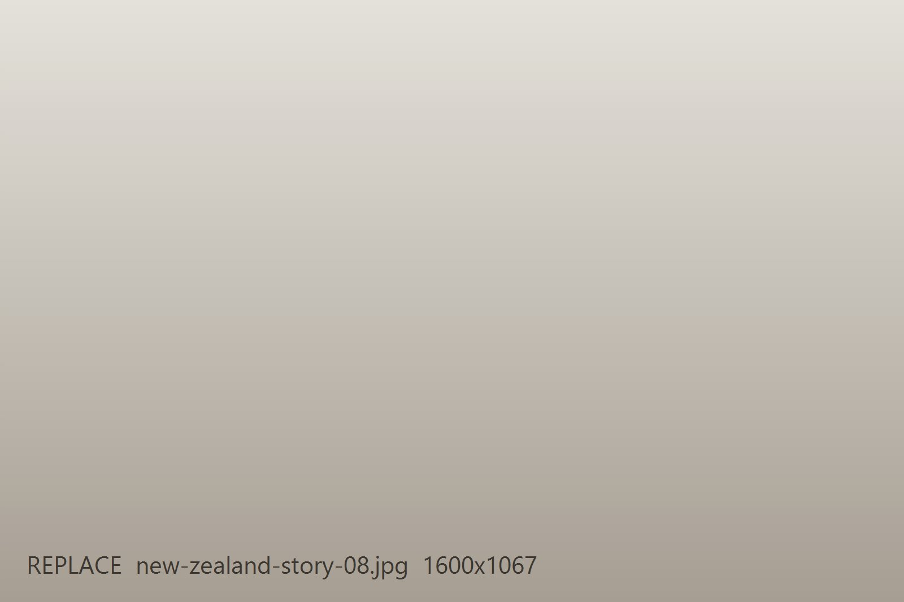
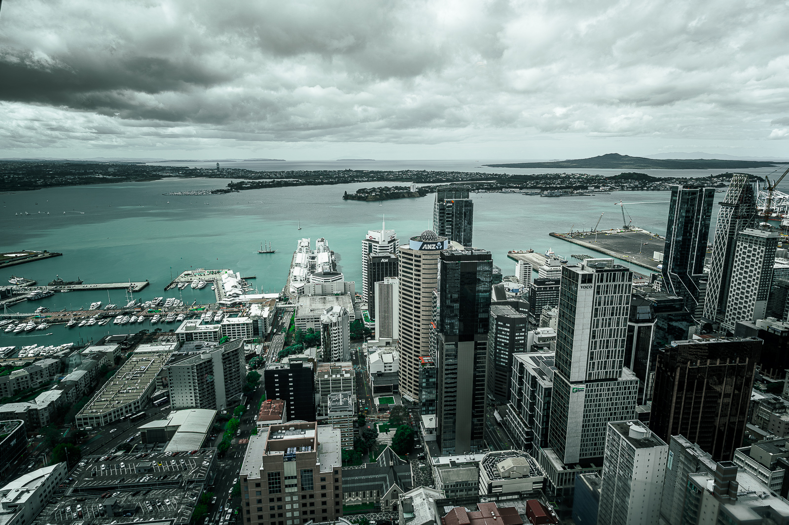
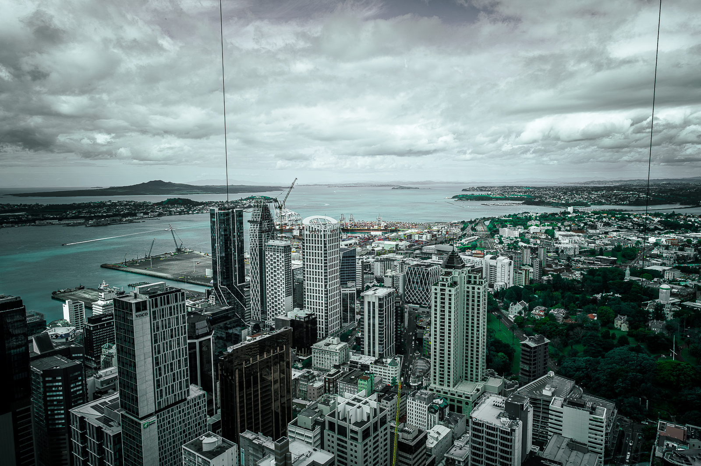
Auckland Approximate Spend: £351
Itinerary
Christchurch to Franz Josef · 4 days
After landing in Christchurch I made my way out to the shuttle bus area to pick up the rental car. I'd opted for a hybrid given the distance ahead of me, without quite clocking that on 208,000 kilometres a couple of Duracell AAs would probably have granted more range in EV mode. To be fair to it though, given the mileage it was in decent shape and saw me through the whole trip, which is really all that matters. From there I headed to my hotel in Christchurch CBD, and with it already being around 2pm I was able to check in without any faffing about. I stayed at Fino Hotels and Suites for £98 for the night, not a bad hotel, a little old fashioned in places, but the room itself was absolutely enormous. I had a wander round the CBD, taking in the Cardboard Cathedral, the New Regent Street precinct and the street tram, grabbed food at a restaurant next to the hotel and had an early night knowing there was a 154-mile drive ahead of me.
The next stop was Hokitika, though I chose to route via Arthur's Pass given how often it came up in recommendations. The drive out of Christchurch took around 30 minutes before settling into a long, steady stretch of road ahead of the pass itself. The total journey time came to around 5 hours, largely down to how frequently you find yourself stopping for photos, along with the weather and a few planned stops along the way. I stopped at Castle Hill, Devils Punchbowl Waterfall and the Otira Viaduct lookout, all worth the detour, with the first two involving a short hike or walking track. I finally reached Hokitika and stayed at Jade Court Motel for £70 for the night, a genuinely nice place with friendly owners who were happy to point me towards local recommendations.
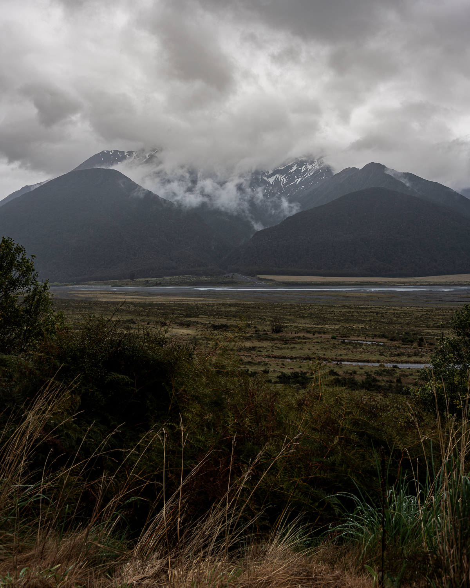
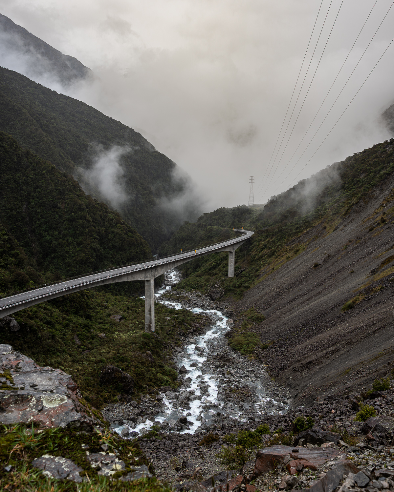
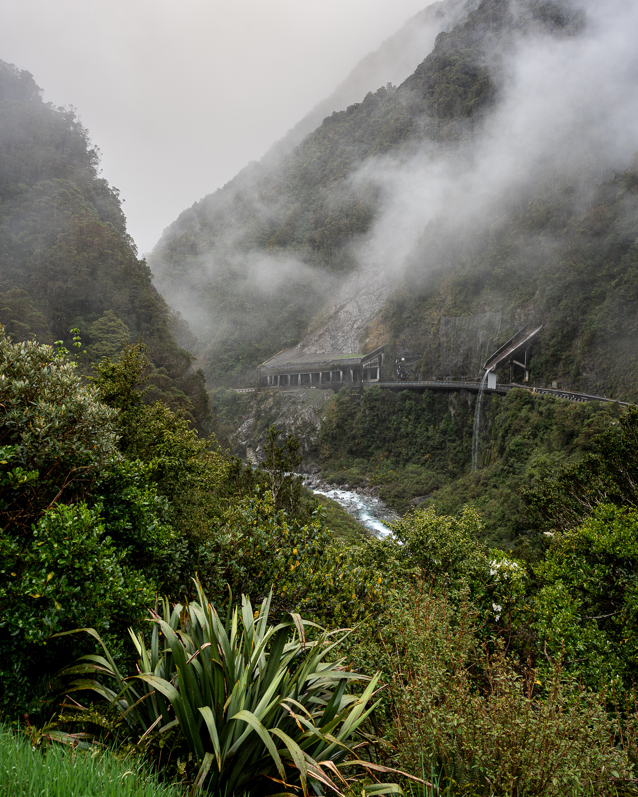
The rain finally cleared, so I headed out for fish and chips and watched the sunset at the beach, one of the prettiest sights of the whole trip. The following morning, after breakfast and checking out, I headed to Hokitika Gorge, a short mile-long loop around one of the bluest glacier lakes I've ever seen. Cover up or lather yourself in insect repellent though, sandflies are probably the worst thing about New Zealand, and they're relentless. From there it was on to Franz Josef, another 3-hour journey made longer again by the sheer number of photo opportunities along the way, though worth every minute of it.
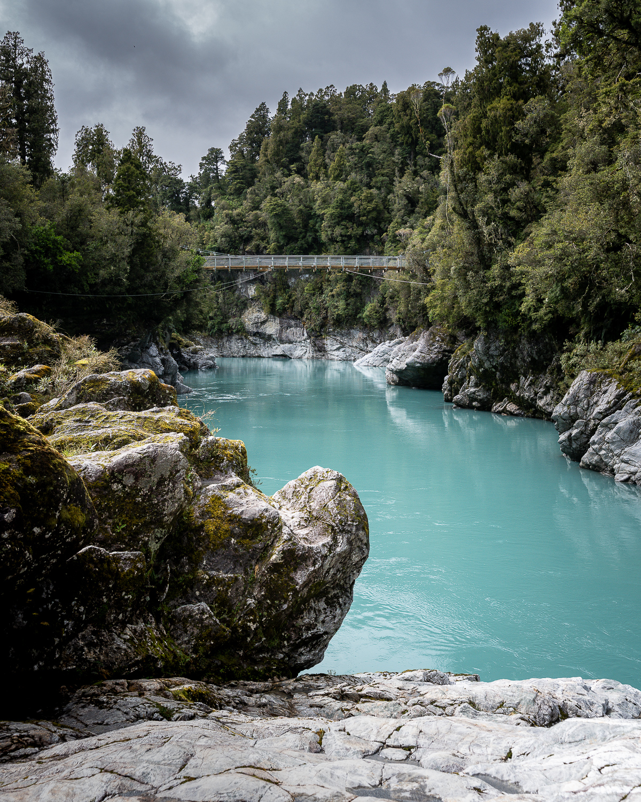
Arriving in Franz Josef, it was noticeably cooler than Hokitika had been. I stayed at Bella Vista Motel for £188 across 2 nights. The town itself is small enough to be largely walkable, so I headed out and did the Callery Gorge walk before dinner and calling it a night.
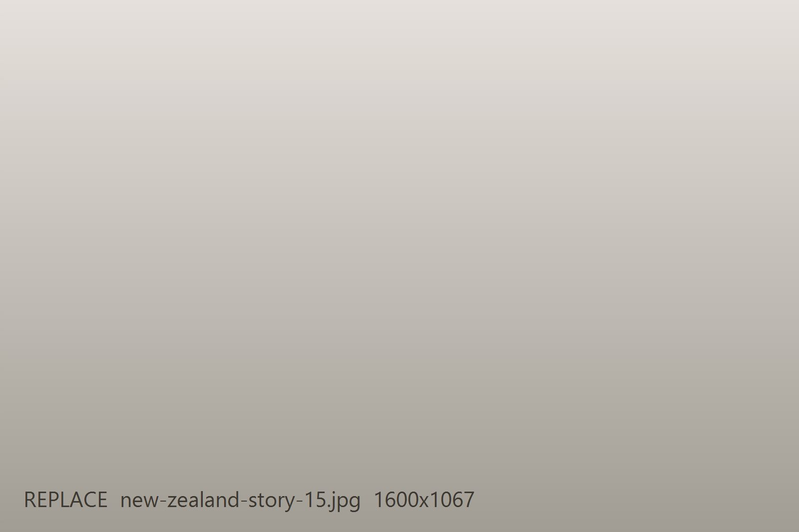
I had a glacier helicopter flight booked for the following day, but received an email that morning saying they wouldn't be able to land on the mountain, with the option to go ahead and take a partial refund, or rebook for the day after with a much higher chance of the full experience going ahead. I opted to rebook, and was glad I did. If you're planning something similar, it's worth building a spare day or two into your itinerary in case plans need to shift. Franz Josef is an unusual place, temperate rainforest, snow capped alps and glaciers, and beaches all within around 50 to 60km of each other, which makes the weather genuinely unpredictable. I spent the spare day hiking up to the glacier viewpoint after a short drive and walk through the rainforest, then drove over to Fox Glacier for the afternoon, taking things steady ahead of the flight.
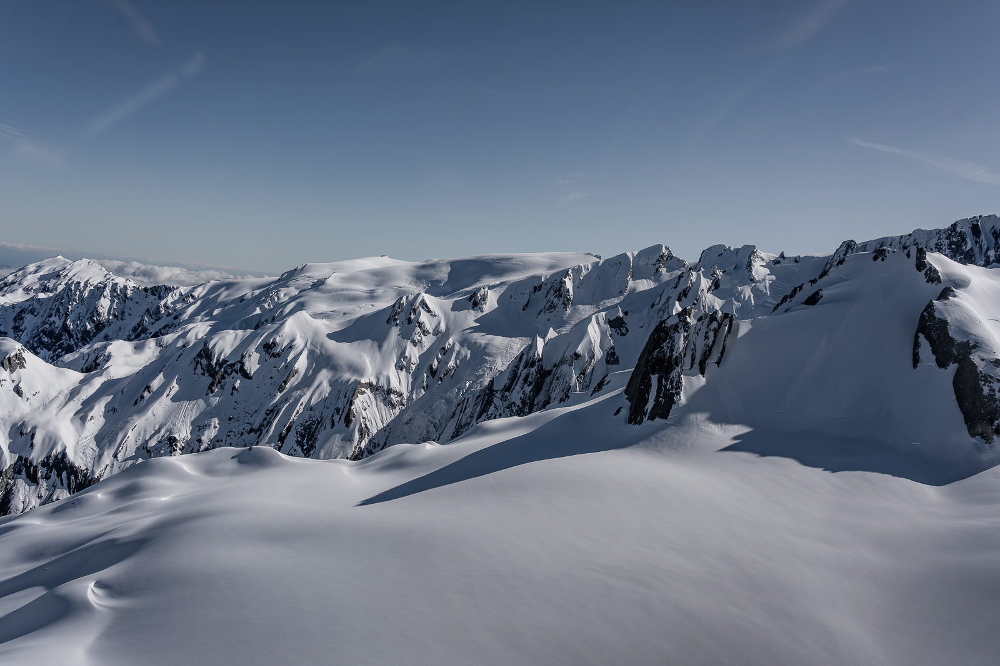
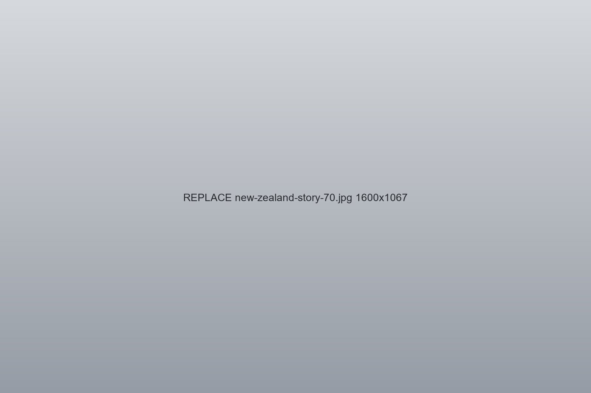
The following morning I packed up, checked out and headed to the tour office to check in, get weighed and board the shuttle bus out to the heliport. The flight itself lasted around 45 minutes and cost £170 through Glacier Country Helicopters, worth every penny. We flew over both Fox Glacier and Franz Josef Glacier before landing up in the mountains, which had seen a fresh covering of snow the night before and looked exactly like a postcard. After landing back at the office I grabbed some lunch before making tracks for Wanaka. One practical note before you leave, fill up with fuel before heading out of Fox Glacier, as there's no fuel station for around 150km on this stretch, so it's worth making sure you have a full tank rather than finding out the hard way.
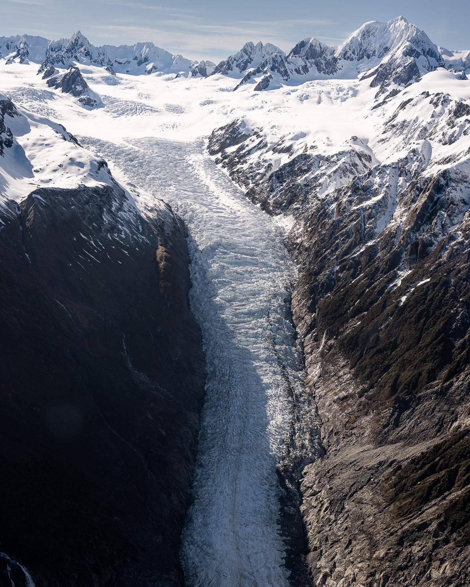
Christchurch to Franz Josef Honest Take
Christchurch is a cool spot, but quiet and spread out, and I probably didn't see as much of it as I should have. Worth a stop if you're passing through, but not somewhere I'd build a return trip around. Hokitika was a nice little beach town, not a huge amount to see or do within the town itself, but a handful of easy to reach spots within 30 minutes that are worth the detour, Hokitika Gorge and the blue lakes especially. Franz Josef was a good place to stop, though given how small the area is you wouldn't want to linger too long. There are a few decent walks and hikes around it though, Lake Matheson, the glacier walks and the gorge hikes among them. The helicopter tour is absolutely worth the money, though the glacier retreat is genuinely eye opening to see up close, so don't go in expecting anything too extreme, at least not at this time of year.
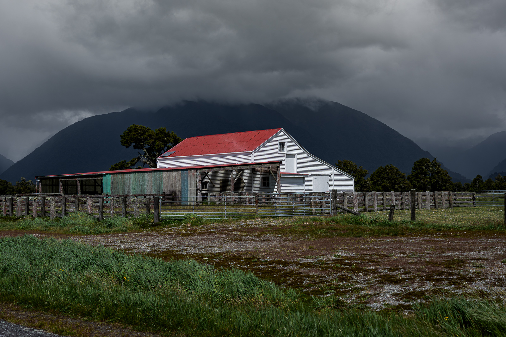
Christchurch to Franz Josef Approximate Spend: £712
Itinerary
Wanaka, Queenstown and Te Anau · 5 days
The route from Franz Josef to Wanaka delivers some incredible views, with plenty of stops worth making along the way. I pulled in at Fantail Falls, Thunder Creek Falls and the Blue Pools before reaching Wanaka. The journey is around 180 miles, so it's worth planning a few stops in between to break the drive up rather than pushing straight through. Arriving into Wanaka was genuinely special, the lake, the snow capped mountains in the distance, music playing somewhere and a relaxed atmosphere over the whole town. I stayed at Clearbrook Motels for one night at £125. The room was nice and spacious, and there was a communal garden area at the back with seating, a nice touch. I headed out for a walk along the lakefront and got the obligatory photo of the tree, along with everyone else who had the same idea.
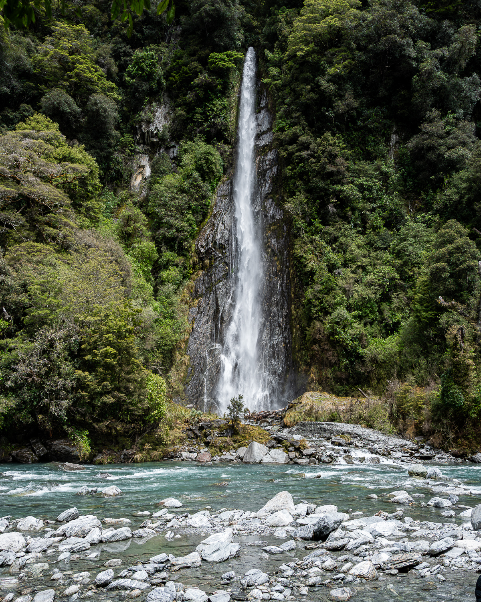
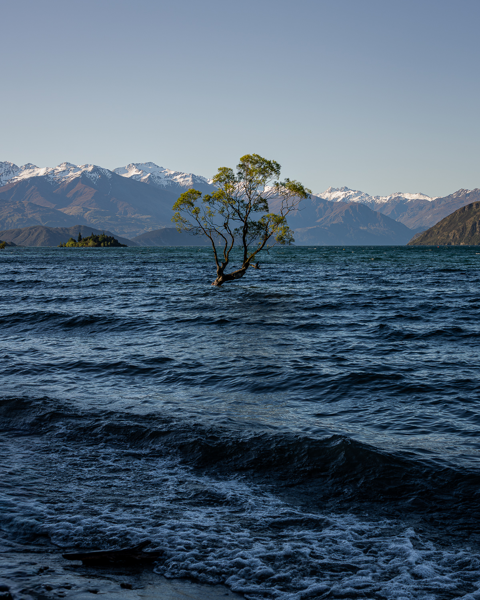
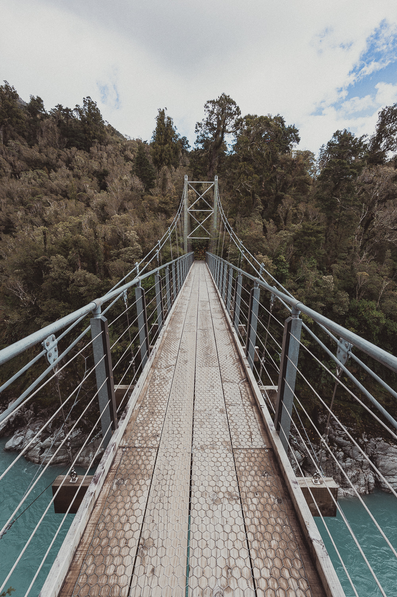
I had planned to hike Roy's Peak this day, but I was fairly tired, got up later than intended and found the car park already full by the time I got there. I hiked Mount Iron instead, much shorter in comparison, but it still offered some nice views over Wanaka and the surrounding area. I grabbed some snacks before making tracks for Queenstown. The drive delivered the views again on the way in, and after finding my hotel and checking in I headed straight back out to explore. I stayed at Earnslaw Lodge for two nights at £180. I'll be honest, I wasn't impressed with this hotel. It wasn't the cleanest, and felt very dated in a way that hadn't come across in the photos.
Queenstown is a popular spot, plenty of thrill seeking activities to book, food places on every corner and some incredible views. The Fergburger queue was spilling out into a different street, and the queue for the Patagonia ice cream shop was heading up the stairs to the second floor, so both were off limits for the evening. I opted for a walk around the gardens on the peninsula instead before heading back ready for the next day.
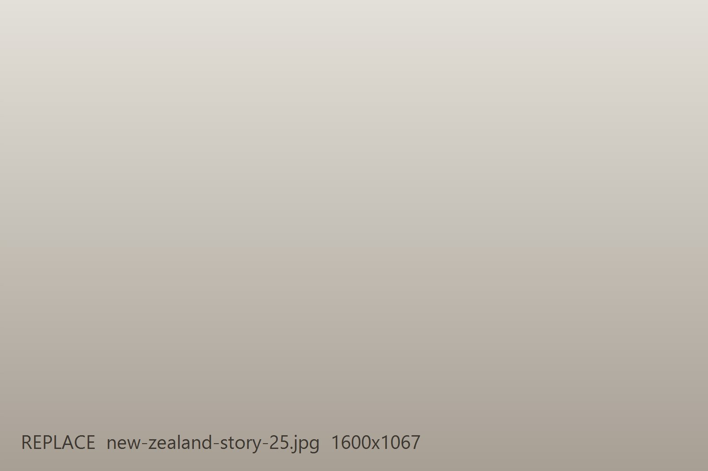
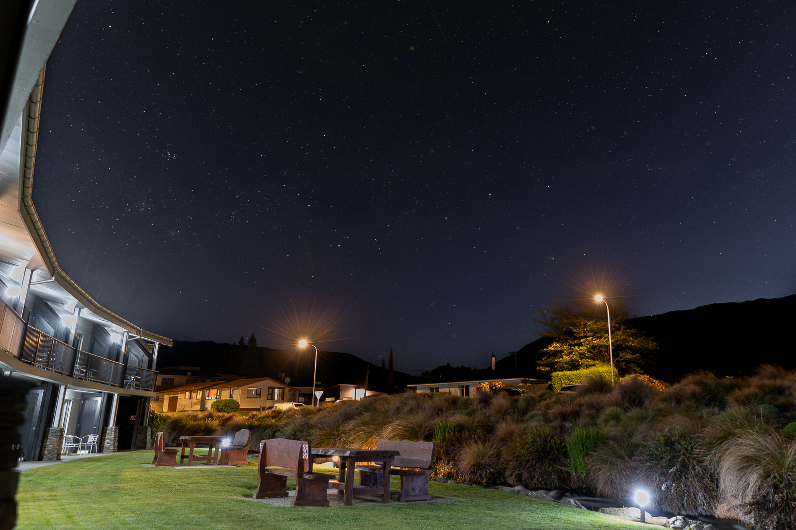
I headed over to Arthur's Point for a Shotover Jet experience, which was great fun. They have exclusive access to the canyon, so if you want that particular adrenaline-filled, up-close canyon experience, this is genuinely the only way to get it. The experience cost £80 for around 30 minutes. The only thing worth flagging is that you wait at either end of the canyon pass for the other boat to clear, so you aren't actually riding for the full time booked, which feels a little steep for the cost. Shortly after I headed to Arrowtown for a look around before the heavens opened. The afternoon plan had been to hike the Tiki Trail and ride the luge down, but the weather put a stop to that. You can take the cable car up instead, though it's very steep, especially if you don't have a head for heights. I grabbed a Fergburger on the way back to the hotel. It was good, but I'm not convinced it's worth the queue.
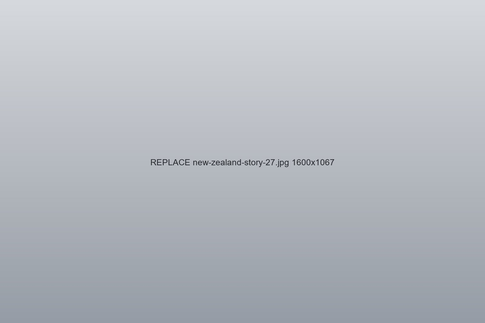
The weather unfortunately continued into the next day, so I had a slower start before filling up with fuel and heading out to Te Anau. It's another 3-hour trip plus stops, so a fair drive, but the views more than make up for it. I stayed at Te Anau Lakeview Holiday Park & Motels for two nights at £165. The concept was clever, a little metal cabin studio with all the amenities you need, but it didn't feel like it had been refreshed since the 90s, which was a shame. The grounds themselves were lovely though, looking straight out onto the lakefront across the road. I went out for a walk around the town, which was noticeably quieter than Queenstown, grabbed some food and called it a night.
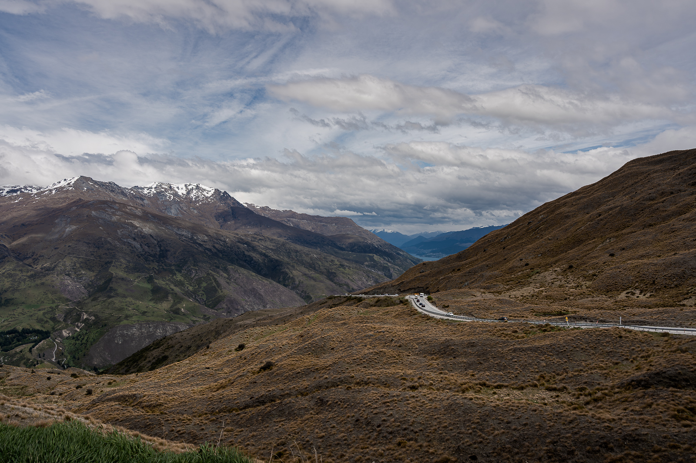
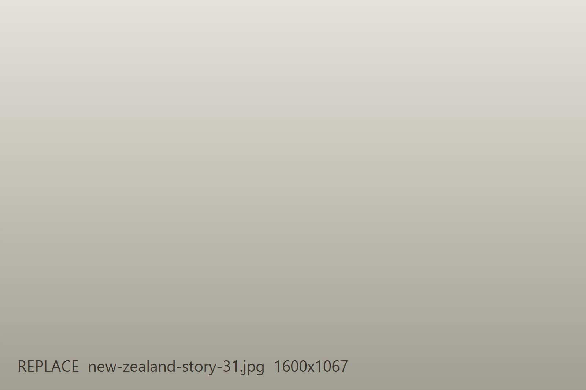
I had a 9:30am cruise booked at Milford Sound, and with the journey from Te Anau running 2 to 2.5 hours, that meant a 5:30am start. The drive in to Milford is genuinely difficult to put into words. Snow capped mountains, the glow of sunrise and empty roads made for one of the standout drives of the whole trip. Do check the Milford Road is open before setting off, as it can close in bad weather. Once you come through the other side of Homer Tunnel the views are genuinely jaw dropping, followed by a series of switchbacks as you descend towards the foot of the fjord. I parked at the free car park near the airport runway and made the 30-minute walk in to the terminal. The paid car park next to the terminal itself is fairly expensive at NZ$10 per hour, which feels a little unnecessary given the free option nearby.
I booked my cruise with Mitre Peak, which I think was the right call. Their boats are noticeably smaller, meaning you aren't fighting for a view with a few hundred other people. The crew were fun, friendly and genuinely informative, pointing out dolphins, seals and penguins to everyone on board as we passed them, which made for a great experience all round. The cruise lasted around 1.5 hours and I'd put it on any New Zealand itinerary without hesitation. Sandflies are an issue here too though, so lather up in repellent before you get off the boat, as they're everywhere.
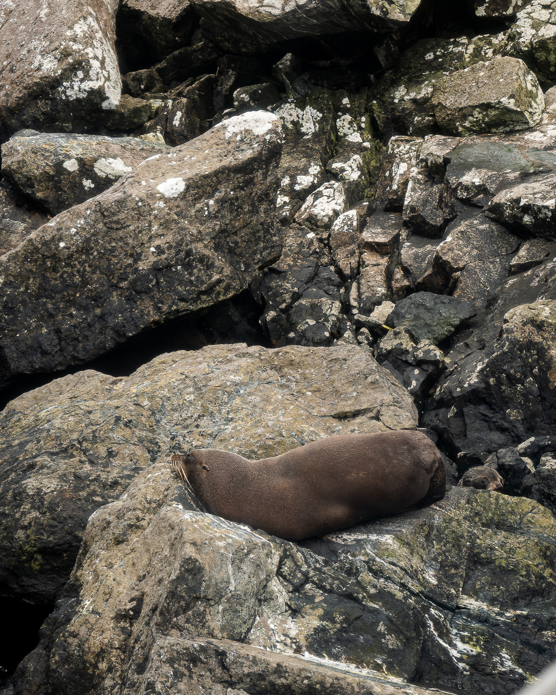
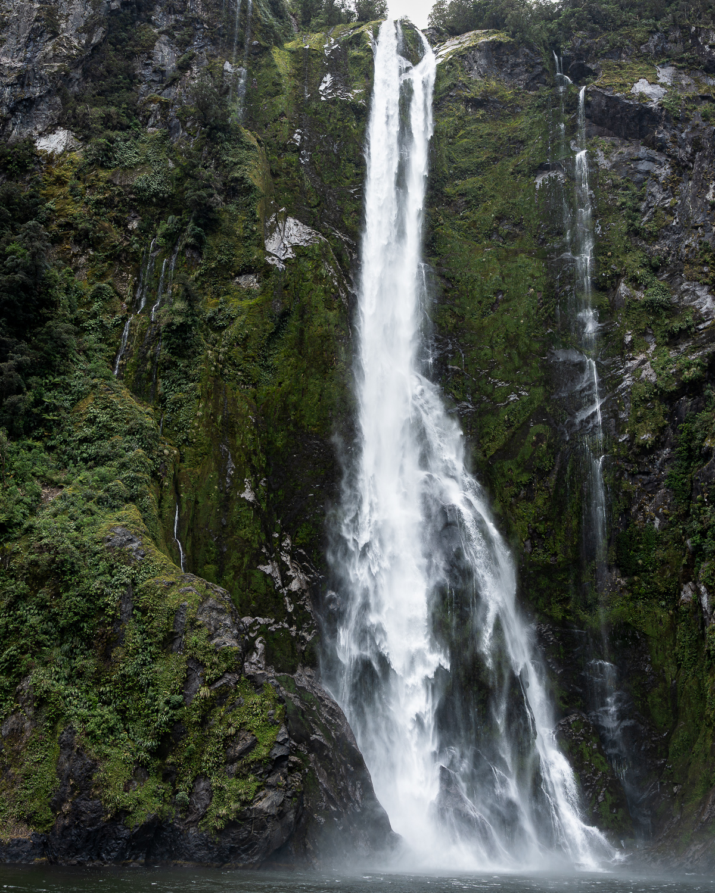
Heading back I stopped at a few of the photo spots I had missed on the way in, and the roads were noticeably busier by this point with people heading in for the early afternoon cruises. I managed to catch the sunset over Lake Te Anau that evening, grabbed some food and called it a night before moving on the next day to Kaka Point.
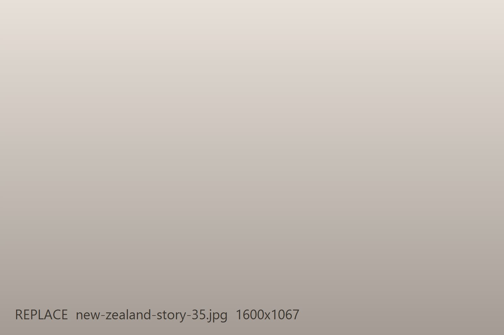
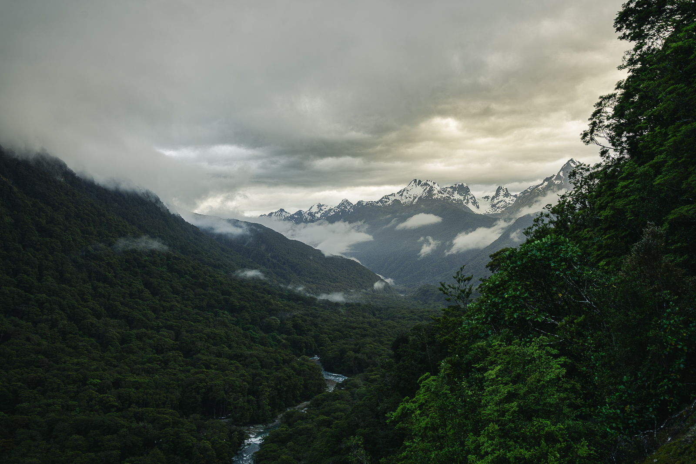
Wanaka, Queenstown and Te Anau Honest Take
Wanaka was one of my favourite stops of the trip so far. It felt like a baby Queenstown, busy, but nowhere near as busy given the difference in size. I wish I had built in another day here just to unwind a bit more and properly explore the local hikes and walks rather than rushing through on the one night. Queenstown I liked, it has a real buzz to it and views in every direction you look, though the weather wasn't on my side while I was there, which meant a few plans had to change. Te Anau was a nice little town, but very quiet, and it's really more of a base for Milford Sound trips or Fiordland hikes than a destination in its own right. Milford Sound itself is an absolute must though, and if you would rather not drive it yourself, it can also be booked as a coach trip from Queenstown.
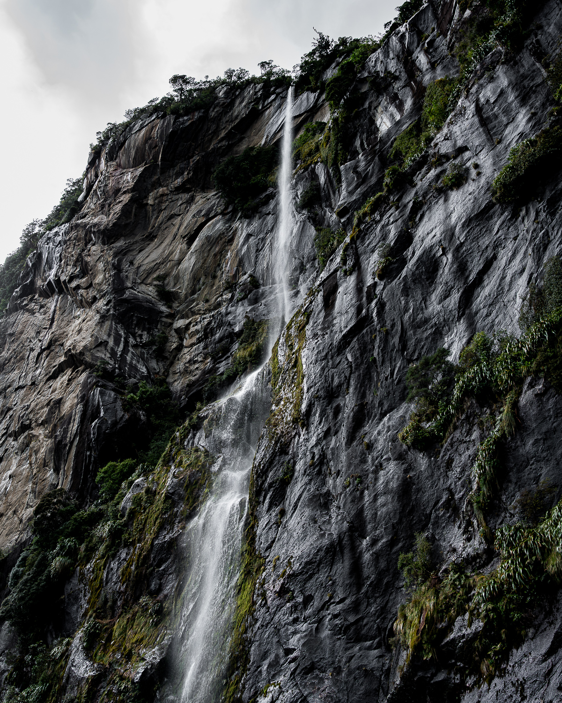
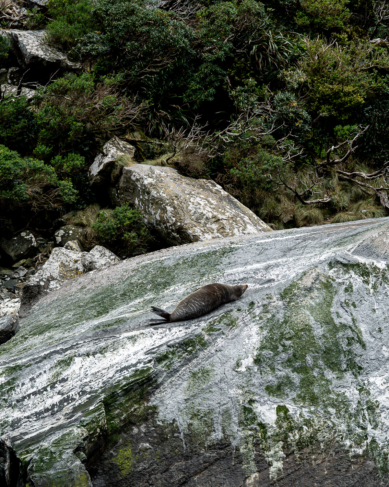
Wanaka, Queenstown and Te Anau Approximate Spend: £803
Itinerary
Kaka Point, Dunedin and Oamaru · 3 days
The rain followed me all the way from Te Anau to Kaka Point, unfortunately, until it finally broke around 5pm. Kaka Point is genuinely remote, home to a couple of hundred locals, with the nearest convenience store around 30 minutes away. There's a small shop on the seafront, but it had closed by the time I found it, so it's worth picking up supplies on the way in rather than relying on it. I stayed at Kaka Point Motel for one night at £75, a really nice, modern motel with great facilities. That evening I headed over to Nugget Point and did the short hike out to the lighthouse, which was quiet, remote and a lovely way to end the day. I headed back for food and an early night.
The following day the sun was out and the whole place felt like a different location entirely. Sheep grazing in the field overlooking the motel, and a group of children having a surfing lesson down on the beach. I spent a couple of hours walking along the beach making the most of the weather before heading out to Dunedin, my next stop.
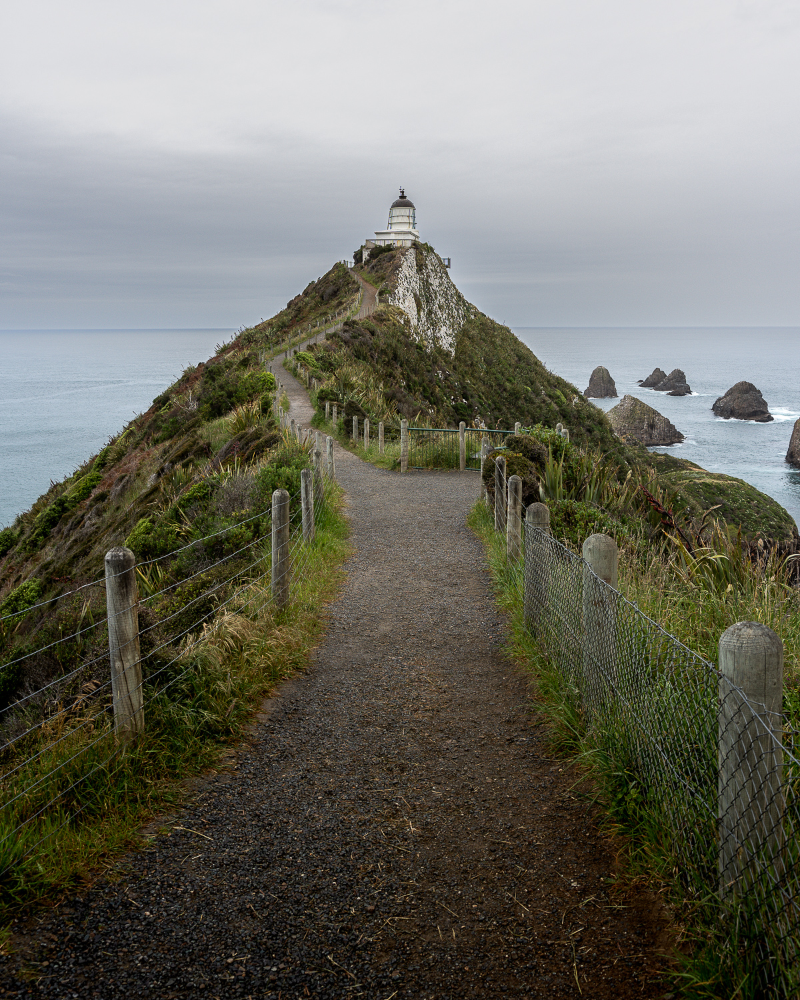
On the way in I had a trial flight booked with Mainland Air at Dunedin International Airport. The experience was a 20-minute flight where you actually get to take the controls, probably one of the coolest things I've ever done. It cost £70, and the full experience ran closer to 30 to 40 minutes once you factor in the briefing, which was a nice bonus. The pilot I flew with, in a Cessna 152, made the whole thing even better, covering a guided take off, manoeuvring at altitude and bringing us back in towards the runway for the pilot to land. Worth every penny, and the views alone would have made it worthwhile. From there I headed to my hotel, staying at The Palms Motel for one night at £100.
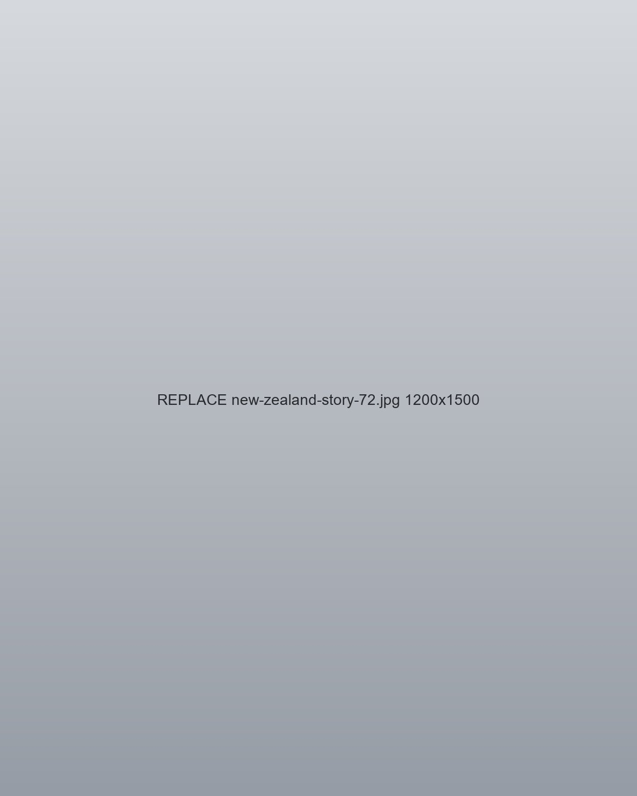
Dunedin CBD was a cool spot, home to a few claims to fame, the furthest city from the UK in the world, and the steepest street in the world, Baldwin Street, along with a number of cruise and sightseeing options in and around the area. I'd probably say a couple of nights here would have served it better, as the peninsula alone has plenty to offer, Larnach Castle among it, along with wildlife viewing points for penguins, whale watching and albatross.
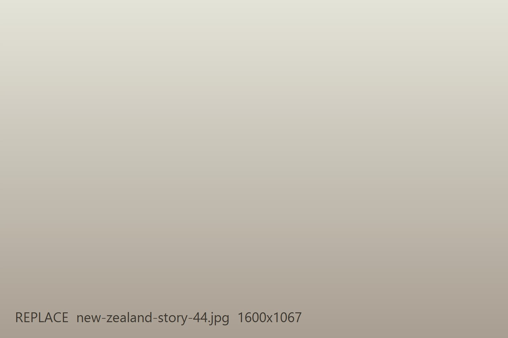
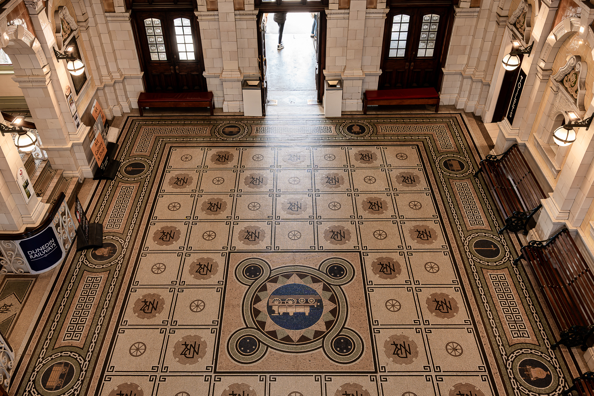
The following day I headed out to Oamaru for the night, staying at Oamaru Motor Lodge for £85. I had a wander round Oamaru centre itself, plenty of small cafes, coffee shops and local amenities, though it felt very quiet for a town of its size. That evening I headed down to the harbour and saw hundreds of penguins along the boardwalk and around the penguin sanctuary area, where sea lions were sunbathing almost within touching distance out the back. It made for a genuinely special evening, seeing that much wildlife in its natural habitat at such close proximity.
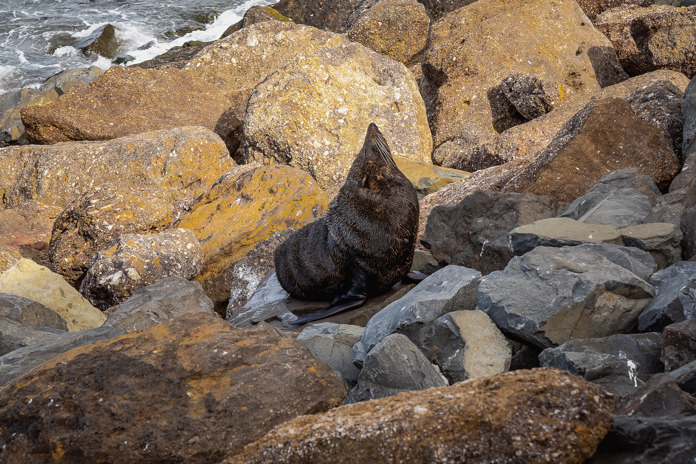
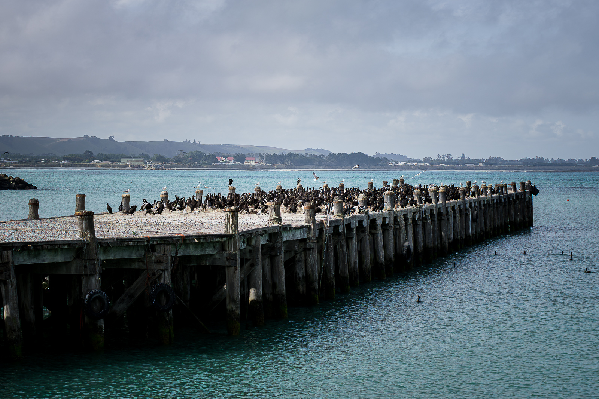
Kaka Point, Dunedin and Oamaru Honest Take
Kaka Point was a nice enough location, but it's a long way out with very little around it, so I'm not sure I'd go out of my way to return in future. That said, the weather didn't help while I was there, so it's a difficult one to properly recommend based on my experience alone. I really enjoyed Dunedin, and felt like more time was needed to go a little further afield and explore properly rather than just skimming the surface. Oamaru was a nice little town too, but I think everything it offered could realistically have been fitted into an extended Dunedin stay, so if you gave Dunedin the extra time it deserves, Oamaru is one you could reasonably drop.
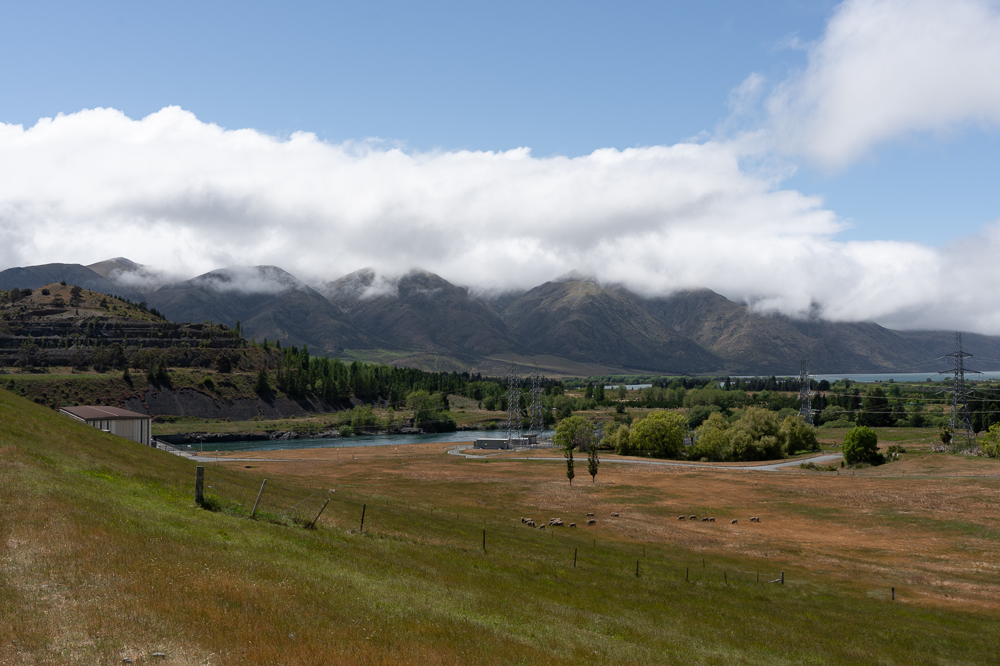
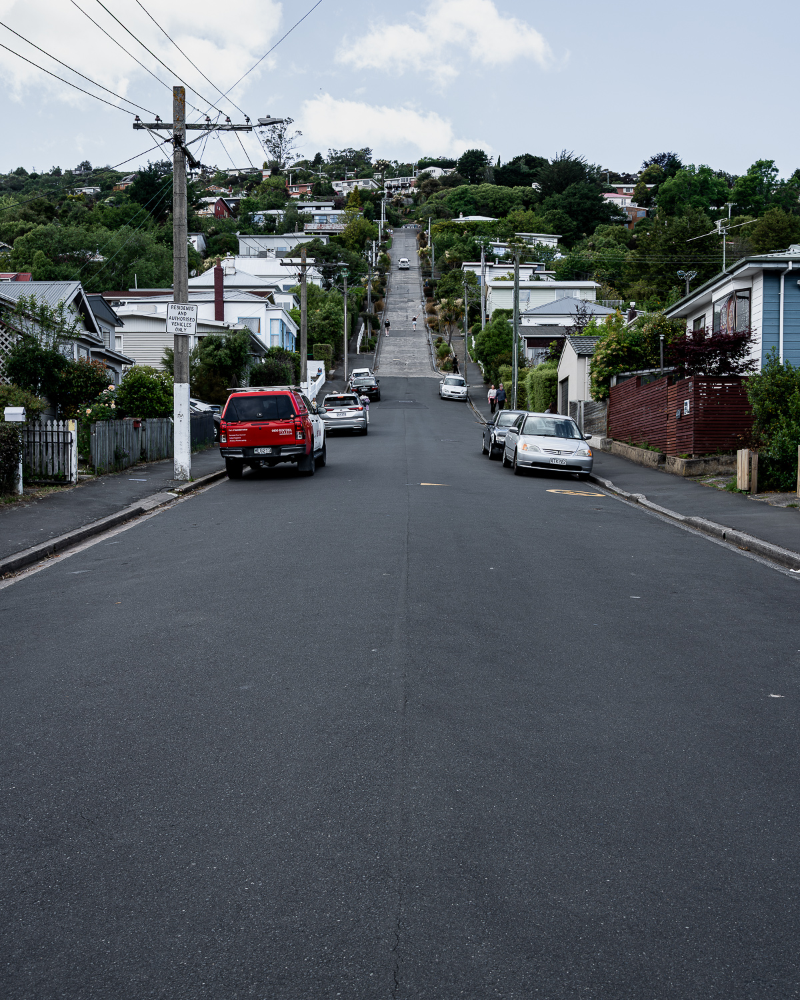
Kaka Point, Dunedin and Oamaru Approximate Spend: £578
Itinerary
Fairlie, Akaroa and Christchurch · 4 days
I opted to stay in Fairlie rather than Lake Tekapo itself, as the price difference between the two was significant, and it was only a 30-minute trip out each way, so not the end of the world. On the way in I stopped at Lake Pukaki and got my first ground level glimpse of Aoraki Mount Cook, the glacier lake shimmering in the sun below it. It was a bit of a gamble given the weather forecast, but it paid off completely. There were so many viewpoints to pull into on the way to Lake Tekapo that it turned into one of the best drives of the trip in its own right. When I finally reached Lake Tekapo I grabbed a late lunch and sat out on the front taking in a view that genuinely didn't look real.
I headed on to my motel in Fairlie to check in, £180 for two nights. Huge, in need of an update, but clean, with friendly owners. I decided to head back to Lake Tekapo that evening in the hope of a clear night and a go at some astrophotography. I found the Church of the Good Shepherd, somewhere I had seen online years earlier and always promised myself I'd visit, and was genuinely surprised how small it was in person. I had a wander round for a while waiting for the light to properly fade, then had a go at some astrophotography under the church.
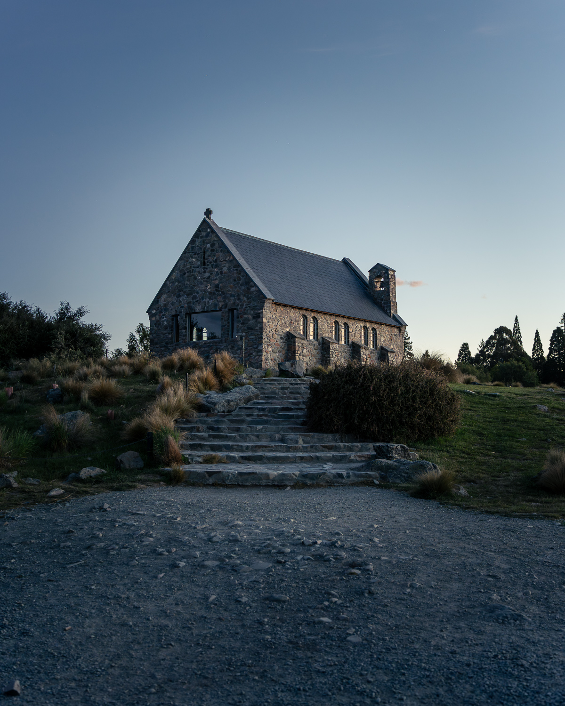
The following day I had a few walks planned along with an astro tour booked for the evening. Unfortunately, despite a clear forecast, cloud cover rolled in and the tour was cancelled, which was gutting given how good the previous night had been on my own. As it turned out I was fortunate enough to have an Akaroa stargazing experience booked later in the itinerary, which more than made up for it. I grabbed some food, took in the views for a while longer and headed back to the motel ahead of moving on the next day.
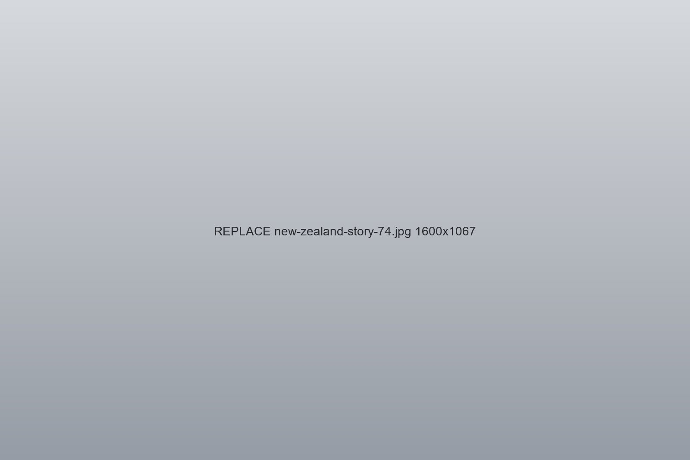
I had a fairly hefty drive ahead of me, around 5 hours without stops, out to Akaroa. I stayed at La Rochelle Motel for one night at £70. The location was properly remote and picturesque. You climb around 1,000 metres before descending back down to sea level on arrival, which makes for some great photo opportunities along the way.
That evening I headed up the hill to the Akaroa stargazing meeting point, where I met Luca and the rest of the group. The session ran for around 1.5 to 2 hours and was a brilliant experience. There were two telescopes set up, one taking long exposures of the night sky and a manual one through which Saturn, the moon and individual stars were all visible. Around 2,500 stars were visible that night, and the Milky Way itself was visible to the naked eye. The experience cost £55 and was worth every penny.
The following day it was time to start getting ready for the journey home. I dropped the hire car off and checked into my final hotel in Christchurch, within walking distance of the airport ahead of my flight the next day. I stayed at LyLo Christchurch for one night at £85. I spent the day at the International Antarctic Centre, NZ$70 for entry, which was very good overall, though some of the displays felt a little dated and could do with a refresh.
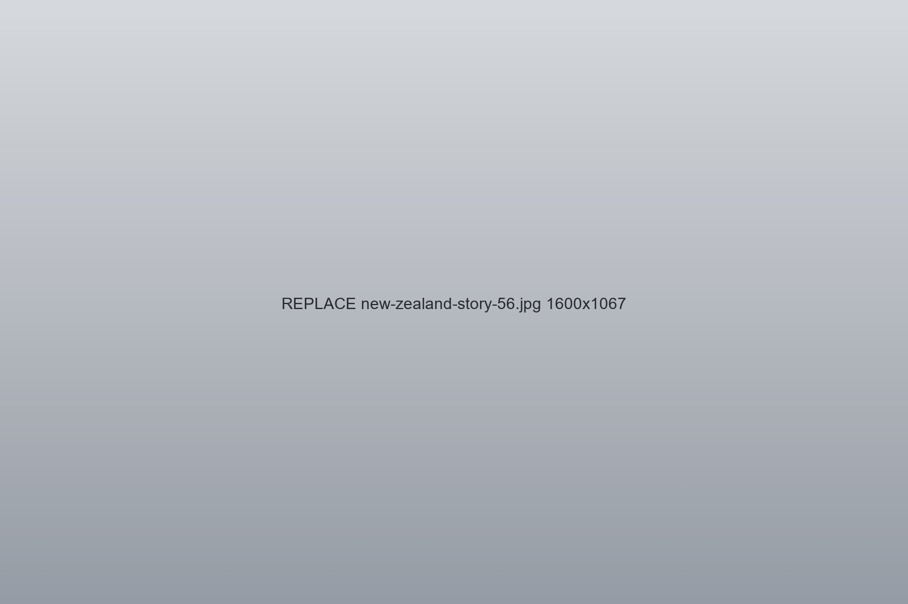
The following morning I checked out, walked over to the airport and started the journey home. The final day was flights, flights and more flights, a midday flight up to Auckland first, before picking up the long-haul leg to LA and finally back into Heathrow. The LyLo turned out to be the perfect location for it, making the whole thing as easy as it could realistically be. After three weeks of unpacking and repacking a different motel most nights, there was something almost restful about a day that just involved sitting still.
Fairlie, Akaroa and Christchurch Honest Take
Lake Tekapo was one of the genuine highlights of the whole trip. It's packed with outdoor walks and spots to just sit and take the views in, and sitting within the Mackenzie Dark Sky Reserve makes it a real draw for anyone into astronomy. I wish I had stayed longer here and spent more time exploring the wider Mackenzie region rather than treating it as a quick pass through. The Hooker Valley Track was closed due to bridge maintenance while I was there, unfortunately, but it's one I'd like to come back and do in future. Akaroa was worth the visit too, particularly with the stargazing experience on the itinerary, which ended up being one of the standout evenings of the whole trip.
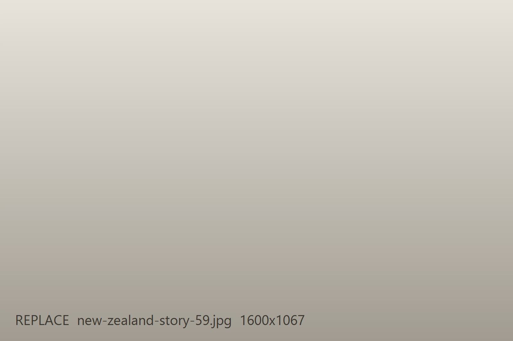
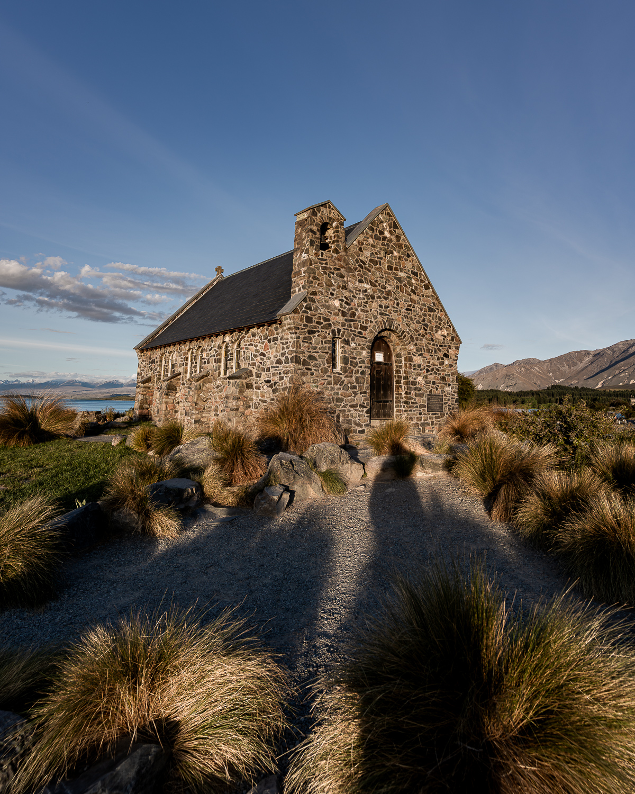
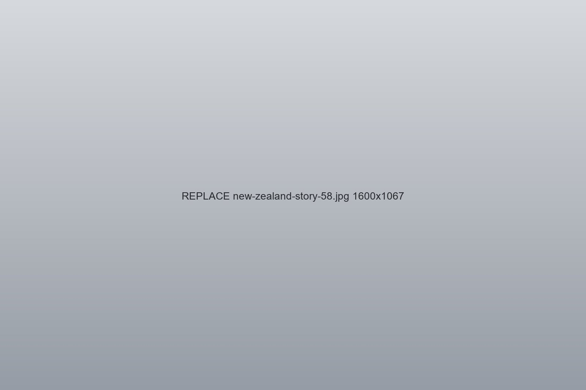
Fairlie, Akaroa and Christchurch Approximate Spend: £752
Wrap Up
A Final Word On New Zealand
New Zealand met and, in most of the places I visited, exceeded my expectations. The pictures you see online don't look real, and the strange part is that you quickly realise they don't look entirely real in person either. It's a beautiful country, just very remote in places, and that remoteness is worth building into how you plan.
If I went back, I'd opt for a campervan instead of a hotel and hire car setup. Some places needed longer than I gave them, and others could probably be skipped altogether, and a camper gives you that flexibility in a way a fixed itinerary of motels doesn't. It's a more expensive way to do it, worth flagging that upfront, but I think it would be worth it for the flexibility alone. I'd put more time specifically into the Mackenzie region, Queenstown and the surrounding area, and Wanaka, all three felt like they deserved longer than I gave them.
I'd also like to see more of the North Island on a return visit. From what I saw it appears to carry a stronger Māori influence than the South Island, which would be interesting to spend more time learning about. On the flip side, I probably wouldn't go back to the southeast coast of the South Island. Kaka Point, Dunedin and Oamaru were all spread quite far apart, and largely offered things I found in stronger form elsewhere on the itinerary.
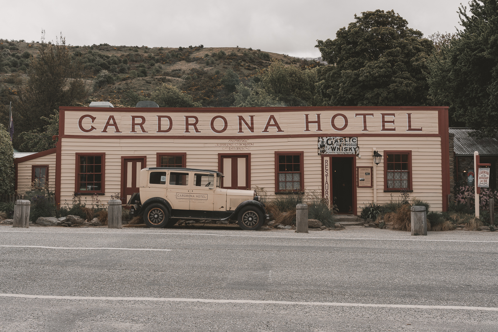
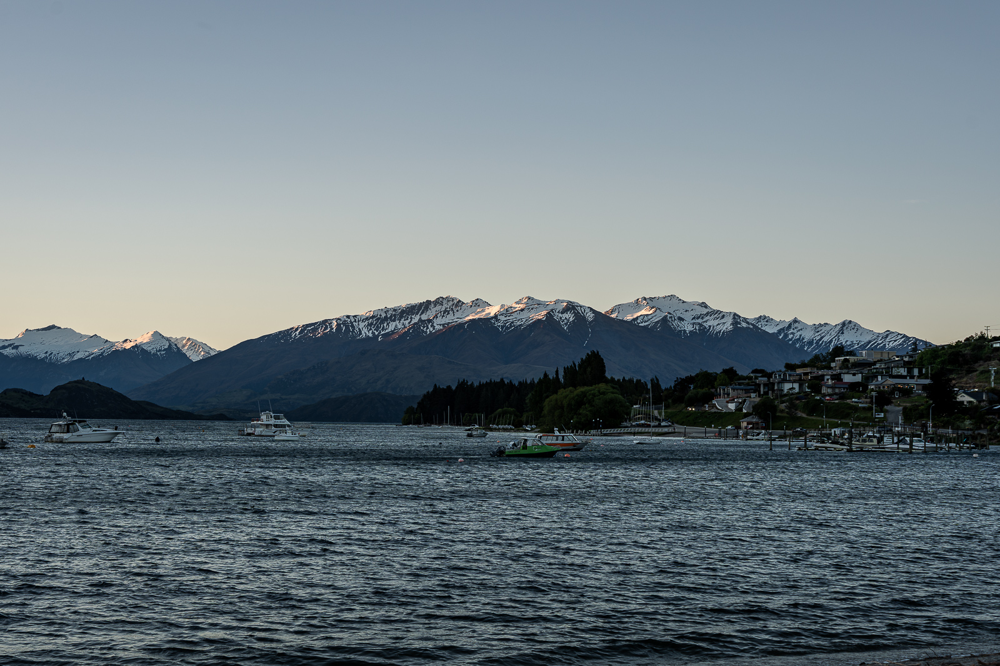
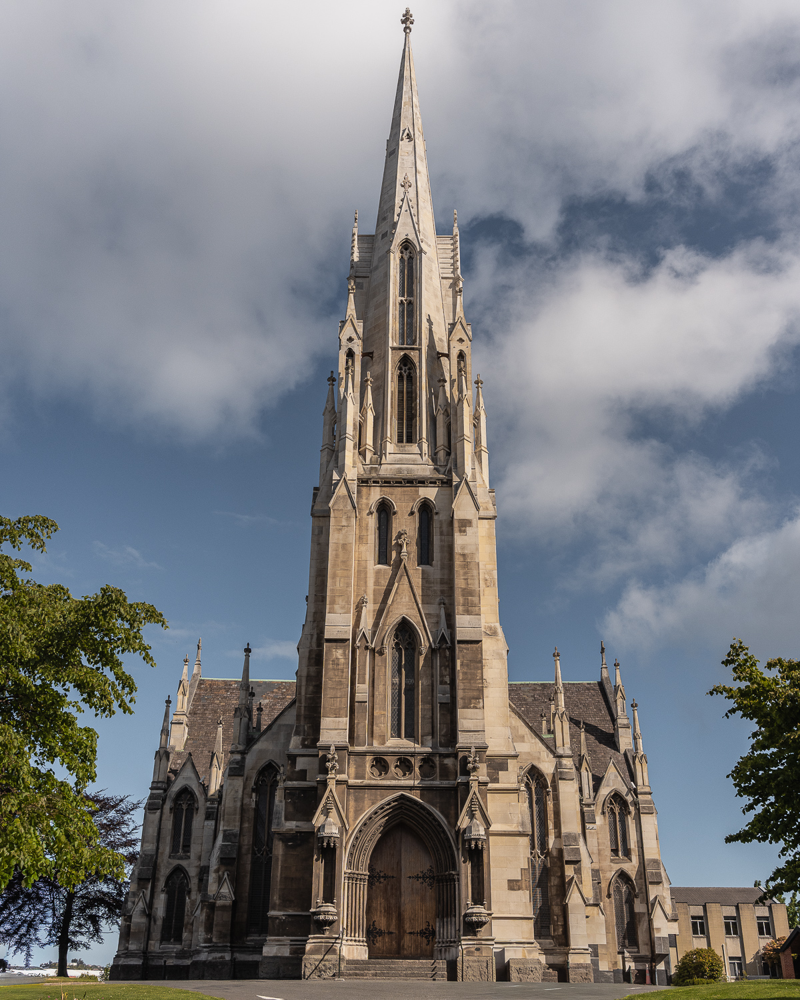
Travel Notes
Trip Cost Summary
All figures below are based on my trip in November 2025. Costs will shift depending on when you travel and how the exchange rate is sitting at the time, so treat this as a realistic ballpark rather than a fixed budget.
Before You Fly
First time purchase? Code ALEX05856 takes £2.50 off.
On The Ground
Auckland — 3 Nights
Christchurch to Franz Josef — 4 Days
Wanaka, Queenstown and Te Anau — 5 Days
Kaka Point, Dunedin and Oamaru — 3 Days
Fairlie, Akaroa and Christchurch — 4 Days
Extras
Travel insurance isn't included above as this varies significantly depending on your provider, level of cover and personal circumstances. Don't skip it.